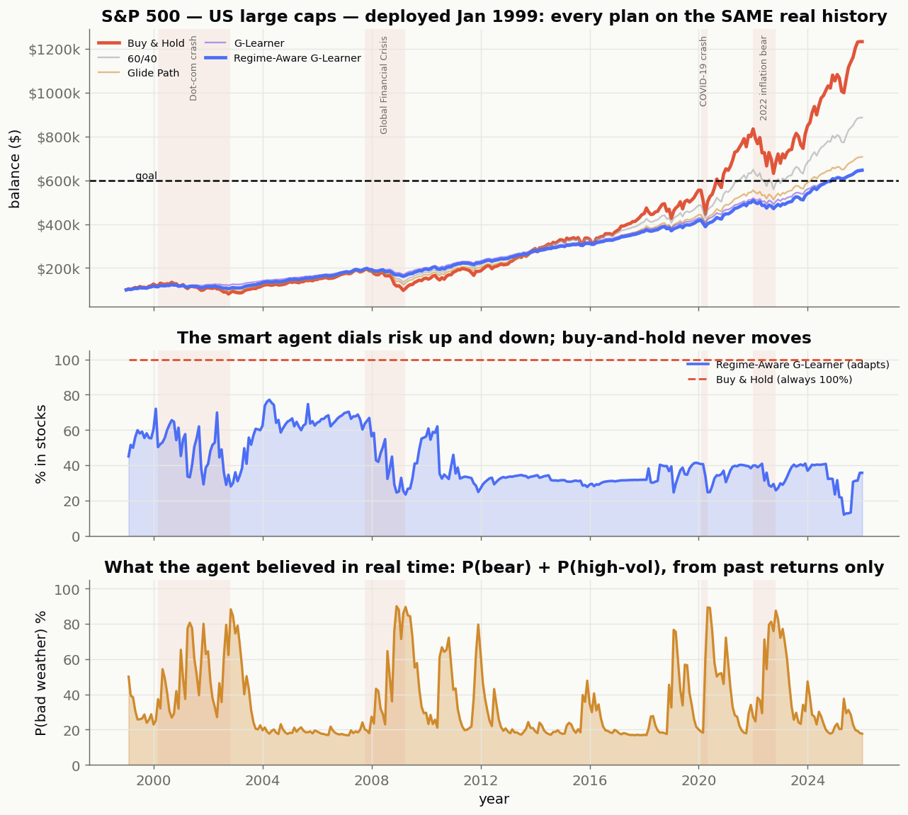

Why goals beat returns.
Dixon & Halperin's G-Learner.
The MDP, faithfully built.
Market regimes & weather.
Real results, no look-ahead.
Where this goes next.
Retirement. A house. A child's education. A normal investor never says "maximize my Sharpe ratio." They say "don't fail my goal." So the objective is the probability of reaching it — not raw return.
Poses retirement-style wealth management as an MDP and solves it with G-Learner — a probabilistic, entropy-regularized extension of Q-learning built for the noisy reality of financial data.
The project sits on one well-cited paper: a faithful replication first, then a single controlled extension. Its objective is the probability of reaching the goal, P(WT ≥ G) — not return.
Course fit · feasibility in scope · room for one meaningful extension. Goal-based RL is the option that wins on every axis.
Every decision the agent ever makes lives inside this cycle.
Regime probabilities enter the state via an HMM belief — so the policy stops being stationary.
How often does it actually reach the target?
If it fails, how bad is the gap?
The full distribution — not one number.
Painful losses on the path, not just the end.
Rebalance, don't churn — costs matter.
Does the policy adapt when the regime flips?
Default goal — $100k → $250k, 20 years, $500/mo. Probability of reaching the goal, average shortfall, average max drawdown.
| Strategy | P(goal) | Avg shortfall | Max drawdown |
|---|---|---|---|
| G-Learner | 0.98 | $1.1k | 0.13 |
| Regime-Aware G-Learner | 0.94 | $3.7k | 0.24 |
| Glide path | 0.79 | $10k | 0.35 |
| 60 / 40 | 0.78 | $12k | 0.33 |
| Buy & hold | 0.63 | $33k | 0.55 |
If the goal is easy, "gamble when behind, coast when ahead" already nearly maxes out — so a regime-blind agent is enough. Push the target higher and the regime-aware agent pulls ahead.

Allocation that personalises around the user's target — wealth, horizon, risk capacity — and rewires when life changes.
"Instead of maximizing raw return like a trading bot, the agent learns portfolio decisions that maximize the probability of reaching a financial goal — and my extension makes it adapt to different market regimes."